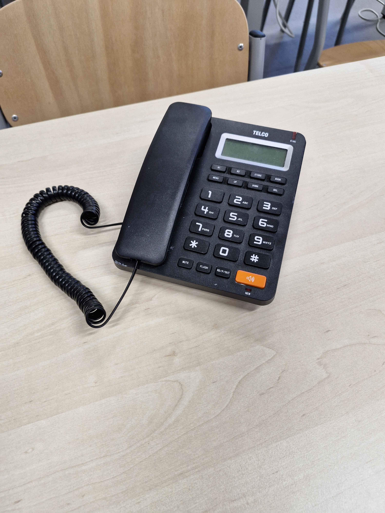

Miniprojekt: 3D skenování telefonu

Skenování starého telefonu, zpracování a měření v GOM Inspect
Zadání
Zadáním bylo naskenovat starý telefon a v programu GOM Inspect model upravit a změřit: povrch, maximální rozměr a libovolný rozměr. Skenování proběhlo na zařízení SIMSCAN.
Příprava objektu
Pro úspěšný sken bylo nutné nalepit referenční body.

Skenování

Po naskenování obou stran bylo nutné skeny sloučit a odstranit anomálie.
GOM Inspect
Model byl exportován do STL a dále zpracován v GOM Inspect.
Naměřené hodnoty:
- Max. rozměr: 236,55 mm
- Délka displeje: 59,43 mm
- Celkový povrch: 90 888 mm²
Návaznost na hlavní projekt
Skenování nebylo v hlavním projektu použito, ale může sloužit jako pomocný nástroj pro náhradu poškozených dílů – skenerem získat geometrii a následně díly vytisknout.